Distance Transform
How far is every pixel from the thing you care about?
Overview
Imagine you have a binary mask containing several objects. How could you find every pixel that lies within 20 pixels of an object? MATLAB's bwdist answers the underlying question: How far is each pixel from the nearest TRUE pixel? Its output is a distance transform, an image of distances rather than intensities.
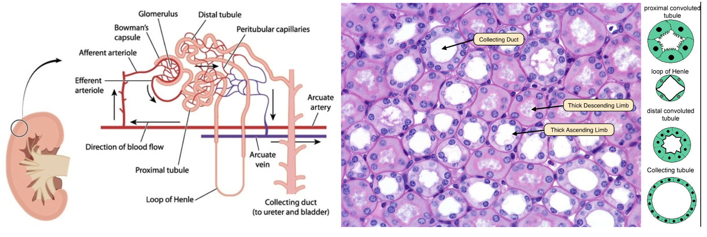
We'll use this idea to study a cross-section of kidney medulla. Thin limbs of the loop of Henle have flattened epithelial cells and relatively few visible nuclei; collecting ducts have cuboidal epithelial cells with more conspicuous nuclei. We will estimate how many segmented nuclei lie near each tubule lumen. The measurement can help distinguish structures, but it does not guarantee that every nearby nucleus belongs to that tubule.
The plan:
- Review Euclidean distance and calculate it in MATLAB.
- Explore
bwdistwith small binary masks. - Reuse color-segmentation methods to obtain nuclei and lumen masks.
- Draw fixed-width rings around lumens and identify nuclei touching those rings.
- Compare nearby-nucleus counts after normalizing by lumen perimeter, and examine the limitations.
Learning Objectives
By the end, you should be able to:
- Calculate Euclidean distance between points using
hypotanddiff. - Explain what
bwdist(BW)measures, whyTRUEpixels have distance zero, and what changes when you usebwdist(~BW). - Interpret distance maps and local peaks found by
imregionalmax. - Threshold a distance transform to create a ring of a chosen width around a binary mask.
- Use
imreconstructto recover complete connected nuclei touched by a ring. - Normalize counts by perimeter and describe why proximity does not establish biological ownership.
Key Terminology
- Euclidean distance: straight-line distance between two points, calculated with the Pythagorean theorem.
- Distance transform: an image in which each pixel gives its distance to the nearest
TRUEpixel in a reference binary mask. - Regional maximum: a pixel or connected plateau of equal-valued pixels surrounded by pixels with lower values.
- Morphological reconstruction: a process that uses a marker to select connected regions from a mask.
Key Functions
- hypot: Square root of the sum of squares (the hypotenuse)
- diff: Differences between consecutive elements
- bwdist: Distance transform of a binary image
- imregionalmax: Regional maxima of an image
- imreconstruct: Morphological reconstruction
- bwconncomp: Find connected components in a binary image
Measuring Distance Between Points
Consider a triangle with three vertices: - (0,0) - (3,0) - (3,4)
We can represent these vertices as a matrix, where column 1 holds the x-coordinates and column 2 holds the y-coordinates:
| Define verticers in a triangle | |
|---|---|
We can visualize our vertices and triangle using scatter and patch. The patch function fills in the triangle's interior, or face:
```matlab linenums="1" "Plot the vertices and fill the triangle" figure scatter(V(:,1),V(:,2),'filled'); xlabel('x'); ylabel('y') grid on axis([-1 9 -1 9]) patch(V(:,1),V(:,2),'cyan','LineStyle',':') text(1, 2.5, 'c = ?')
```matlab title="Fill the triangle"
patch(V(:,1),V(:,2),'cyan','LineStyle',':')
text(1, 2.5, 'c = ?')
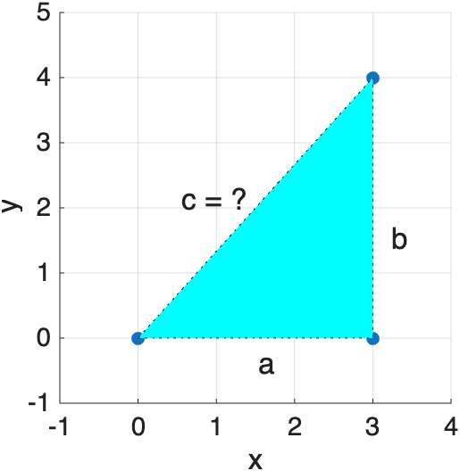
How long is the hypotenuse, c? The Pythagorean theorem gives us the answer, once we know the lengths of the two legs, a and b:
| Pythagorean theorem | |
|---|---|
The function hypot does the same calculation in one step:
Distance Between Two Points
So, when you need to calculate the distance between any two points, simply visualize the sides of a triangle and then use the pythogorean theorem to calculate the distance
For example, consider two points at (2,3) and (5,7).
For two points, diff subtracts the first row of coordinates from the second. The resulting horizontal and vertical differences are the legs of an implied right triangle:
| Distance between two points | |
|---|---|
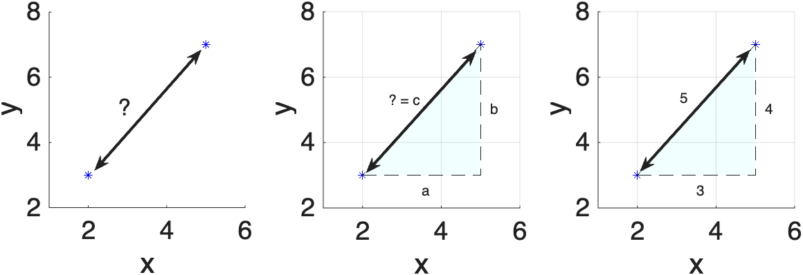
Visualize the triangle these two points imply: a is the horizontal leg, b is the vertical leg, and c—the straight-line distance between the points—is the hypotenuse.
Length of a Polyline
The same idea, repeated for every consecutive pair of points, gives the total length of a connected line:
| Total length of a polyline | |
|---|---|
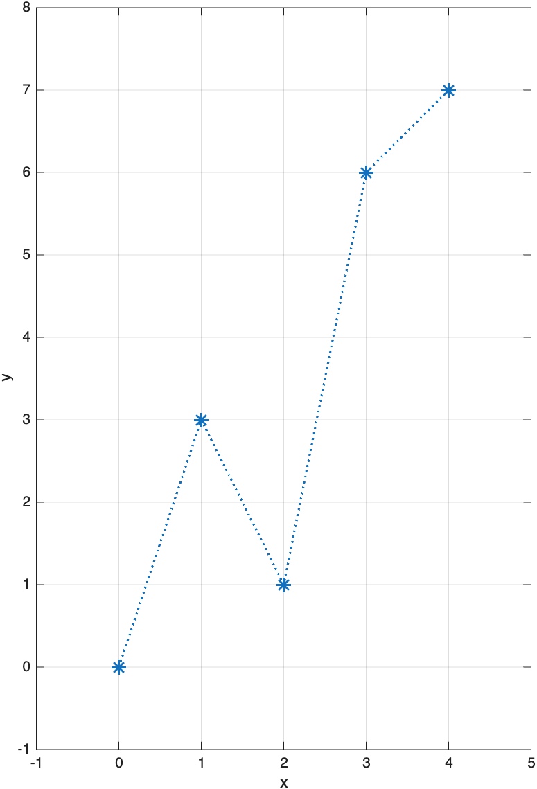
It really is "triangles all the way down": each segment of this zig-zagging line is the hypotenuse of its own small right triangle.
For reference, the same calculation can be written in a compact, vectorized form. The three-line version above is easier to inspect while learning:
The distance transform uses the same Euclidean geometry, but solves a different problem: it measures the distance from each image pixel to the nearest
TRUEpixel in a reference mask, not between consecutive points on a line.
What Is the Distance Transform?
The distance transform replaces every pixel in a binary image with its distance (in pixels) to the nearest TRUE pixel. TRUE pixels themselves get a distance of 0. By default, bwdist measures straight-line (Euclidean) distance, so a diagonal neighbor is √2 ≈ 1.41 pixels away—exactly the Pythagorean calculation above, just automated for the whole image.
Consider a 5×5 logical array with a single TRUE at its center:
B =
2.8284 2.2361 2.0000 2.2361 2.8284
2.2361 1.4142 1.0000 1.4142 2.2361
2.0000 1.0000 0 1.0000 2.0000
2.2361 1.4142 1.0000 1.4142 2.2361
2.8284 2.2361 2.0000 2.2361 2.8284
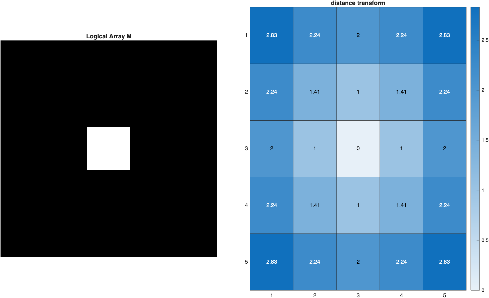
Bis the same size asM. Every element contains the distance in pixels from that location to the nearestTRUEpixel. The location of theTRUEitself is zero, and diagonal neighbors are calculated with the Pythagorean theorem—just as we did by hand above.
Check Your Understanding: Add a Second Point
Before running MATLAB, predict what will change if we add a second TRUE pixel at row 3, column 5. Which pixels will have distance zero? Will the distance at row 3, column 4 increase, decrease, or stay the same?
Check your prediction
The distances at (3,3) and (3,5) are both zero. Pixel (3,4) is one pixel from either TRUE pixel, so its distance remains 1. No distance can increase when you add another target: each pixel can choose the nearest of two targets instead of only one.
For an additional check, compare Bcheck(3,5) with B(3,5). It changes from 2 to 0.
Distance Outside vs. Inside an Object
Which pixels you mark TRUE determines what the distance transform measures. Consider a filled square:
bwdist(BW)is zero inside the square and increases as you move away from it.bwdist(~BW)is zero outside the square and increases toward the square's center.
Connection to watershed segmentation
Distance-to-background maps such as bwdist(~BW) are often used to find the centers of objects and help separate touching objects. In this module, we mainly use bwdist(BW) to measure distances outside duct masks.
Multiple TRUE Pixels
What happens with more than one TRUE pixel? Here we place four single points in a 100×100 array:
| Distance transform with multiple points | |
|---|---|
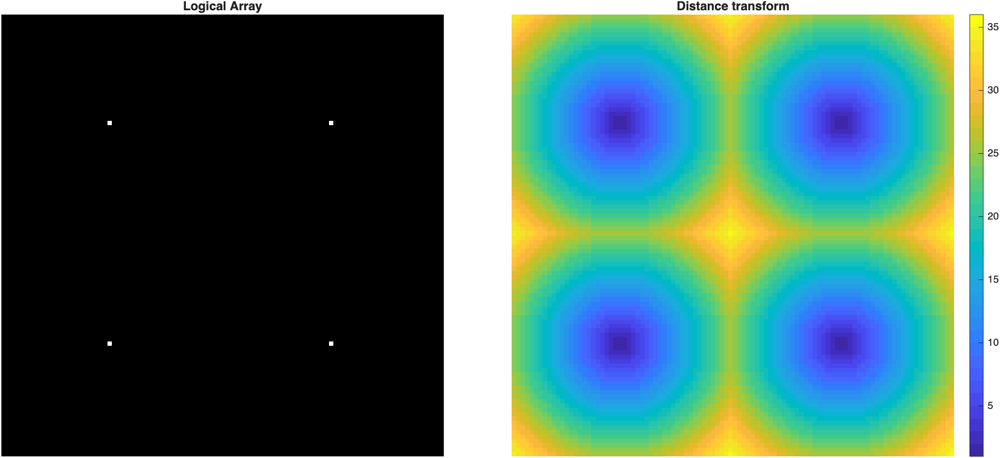
The distance transform is zero (dark) at each of the four points. Close to each point, the distance rings are circular, since every pixel measures its distance to its nearest
TRUE. Where rings from neighboring points meet, they form straight lines exactly halfway between the points—so each point ends up "owning" one square quadrant of the image, with its rings morphing from circular near the center into a squared-off "squircle" as they approach the quadrant's edges. The largest distances (brightest) fall at the center and corners—the pixels farthest from any point.
Distance isn't always Euclidean
bwdist can measure distance several other ways by passing a method name as a second input: 'cityblock' (only horizontal/vertical steps), 'chessboard' (diagonal steps count the same as straight ones), and 'quasi-euclidean' (a fast Euclidean approximation). Applied to a single point, each produces a different shape instead of a circle:
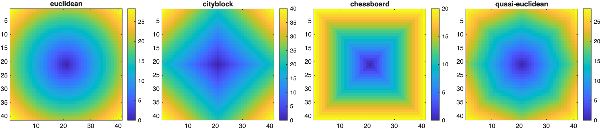
Euclidean gives a circle, cityblock gives a diamond, and chessboard gives a square—a nice reminder that "distance" is a choice, not just a fact about the pixels.
Example: Classifying Kidney Tubules
Consider this cross-section through kidney tissue:
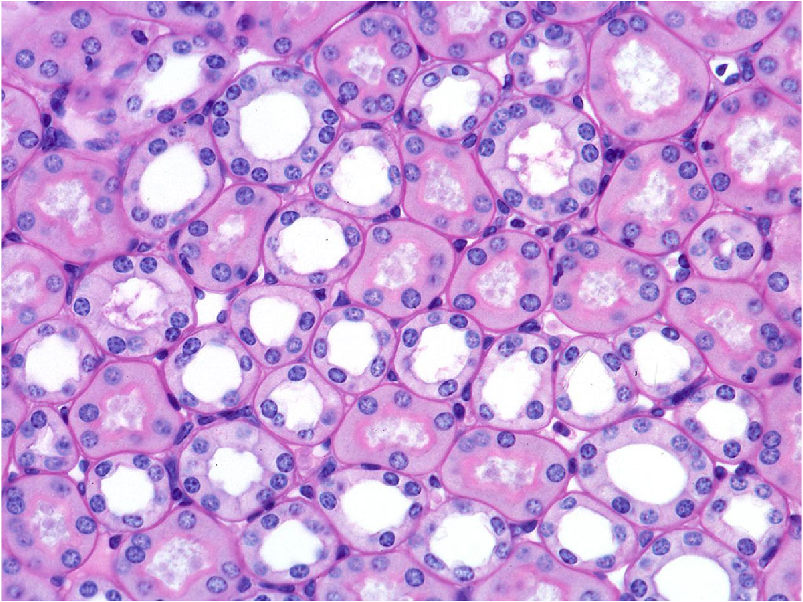
We'll segment the dark nuclei and the white duct lumens, then use the distance transform to figure out which nuclei surround which duct.
Segmenting Nuclei and Ducts
Before measuring distances, we need two binary masks: one for nuclei and one for the bright tubule lumens. This is a review of the techniques introduced in Color Segmentation, not a new distance-transform operation.
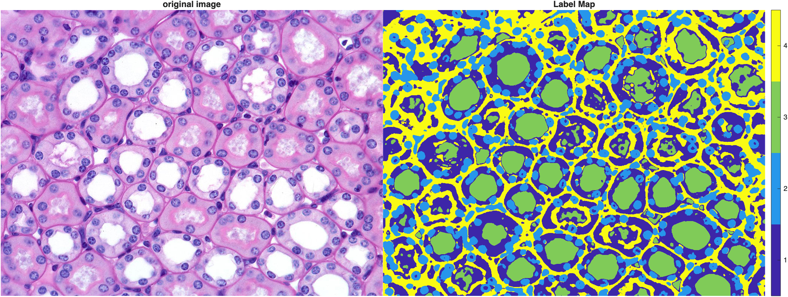
How the masks were created (expand for code)
A median filter reduces small-scale noise, and k-means clustering groups pixels by color in L*a*b* space. Cluster labels are arbitrary, so we identify the darkest and brightest clusters by their average L* (lightness) values.
The custom function mmGetWatershed is used here to split touching nuclei; it is not a built-in MATLAB function. You need the course-provided function to reproduce that step.
| Clean masks | |
|---|---|
Some lumens containing pink-stained material are not captured by the brightest k-means cluster. That is a segmentation limitation, not a distance-transform limitation.
The resulting masks are shown below. All distances later in this lesson depend on the accuracy of these masks.
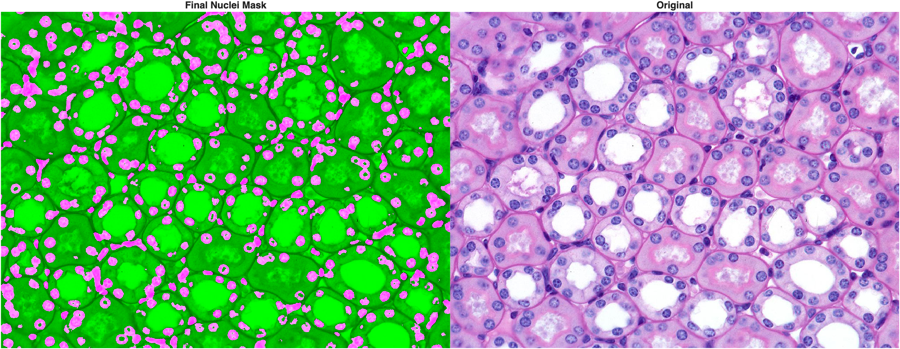
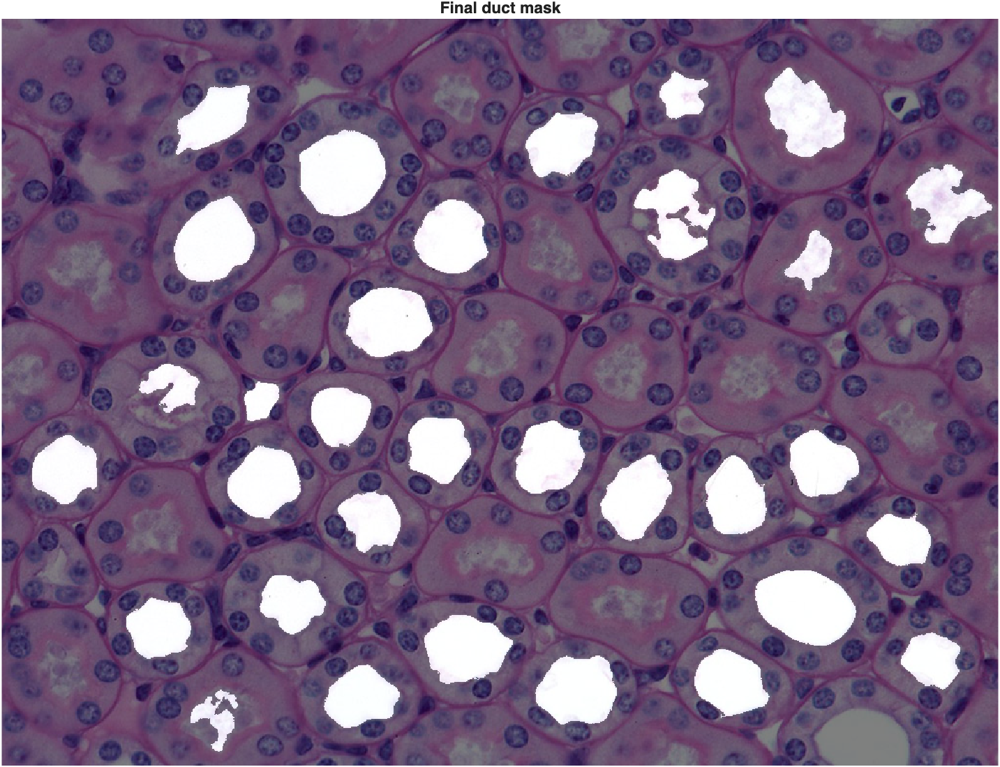
| Measure nucleus size | |
|---|---|
Exploring the Space Between Ducts
With the lumen mask in hand, we can map the distance from each background pixel to its nearest lumen:
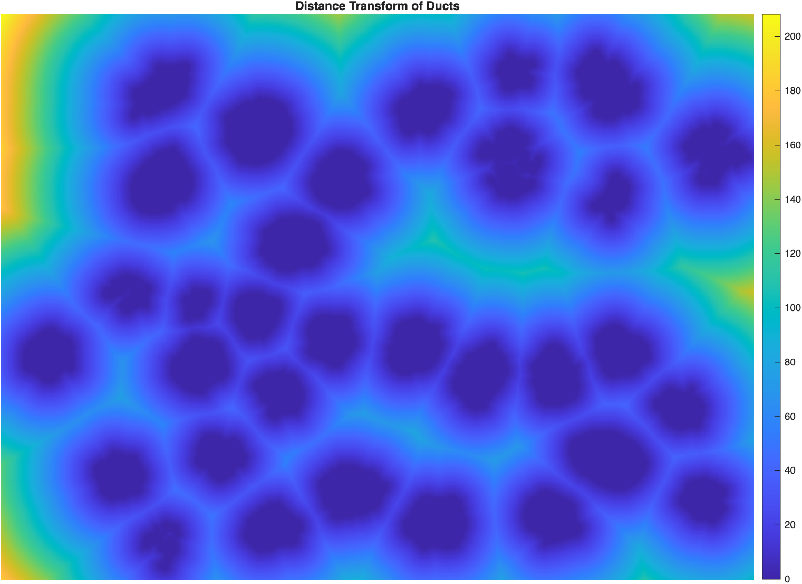
Dark lumen pixels have distance zero. Brighter pixels are farther from the nearest lumen. Some bright ridges occur in spaces between lumens, but not every ridge is an exact midpoint between a particular pair of lumens.
We can identify local peaks with imregionalmax:
| Find local distance peaks | |
|---|---|
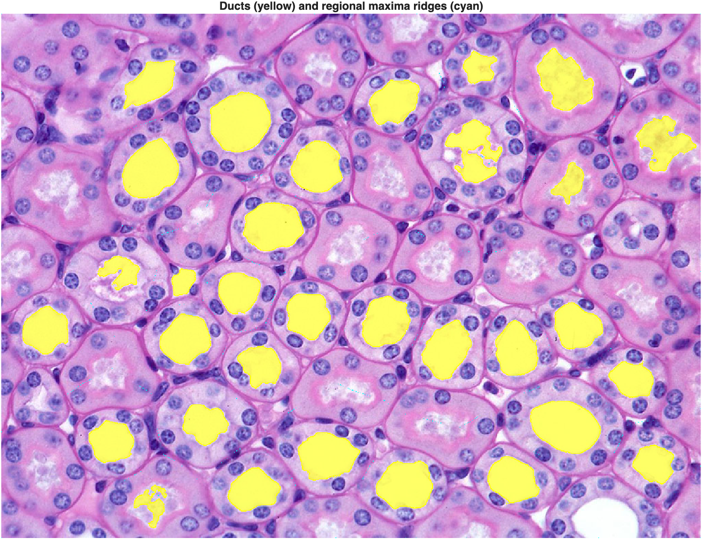
These peaks help us locate open regions between lumens. They are not a complete map of the boundaries between nearest-lumen regions. Nor does doubling every peak value necessarily measure the distance between two duct boundaries: a peak can occur near an image edge or in a space influenced by several lumens.
For exploration, we can examine the distribution of peak distances (in pixels):
| Explore distances at local peaks | |
|---|---|
Interpretation
This histogram summarizes distances at regional-maxima pixels, not measured lumen-to-lumen separations. Large plateaus may contribute multiple pixels. To measure true pairwise spacing, we would need to identify which two lumen boundaries are being compared.
Drawing a Boundary Around Each Duct
Now the main event. Why we need the distance transform: if we threshold the distance transform of the duct mask, every pixel between two chosen distances forms a ring around each duct. Nuclei that touch that ring are near that lumen, although they do not necessarily belong to it. First, a label map, so we can work with one duct at a time:
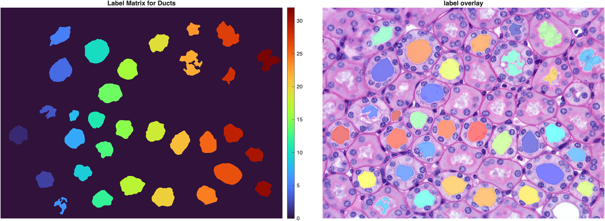
How wide should the ring be? One reasonable starting point is approximately one nucleus diameter: wide enough to touch nuclei near the lumen, but not so wide that it reaches many unrelated nuclei. The nuclei we already segmented give us a sense of scale:
Roughly 18 pixels on average—so a boundary width of 20 pixels is a reasonable starting point. Visualizing the distance transform of just one duct makes the ring concept concrete:
| Distance transform of a single duct | |
|---|---|
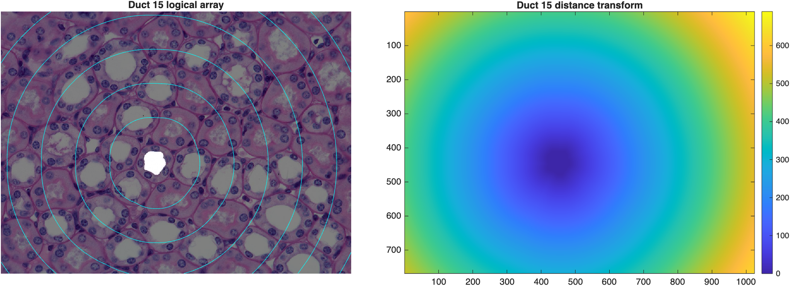
Inside the duct mask itself, the distance transform is zero; the contour lines radiate outward in concentric rings, exactly like the toy examples above.
Thresholding the distance transform between 0 and 20 pixels produces the ring. The first condition excludes the lumen (distance > 0); the second includes only pixels closer than 20 pixels (distance < 20). Both conditions must hold:
| Threshold a 20-pixel ring around every duct | |
|---|---|
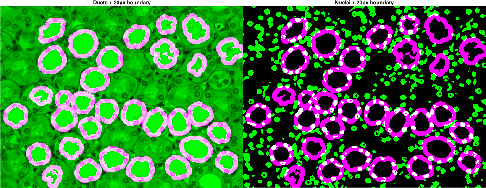
Rings should touch nearby nuclei without reaching too far into neighboring tissue. A nucleus can touch more than one ring, so a proximity count does not necessarily assign it uniquely to one lumen. A morphological dilation with a disk-shaped structuring element is a related way to build a ring, although the exact pixels can differ.
Capturing the Surrounding Nuclei
A ring tells us where to look, but we still need to select the whole nuclei it touches—not just the sliver of each nucleus that happens to fall inside the ring. imreconstruct(marker, mask) keeps every object in mask that touches marker, in full, and drops the rest. First intersect the ring with the nuclei mask to obtain a valid marker. Reconstruction then returns the complete connected nuclei containing those marker pixels:
| Keep whole nuclei touching the ring | |
|---|---|
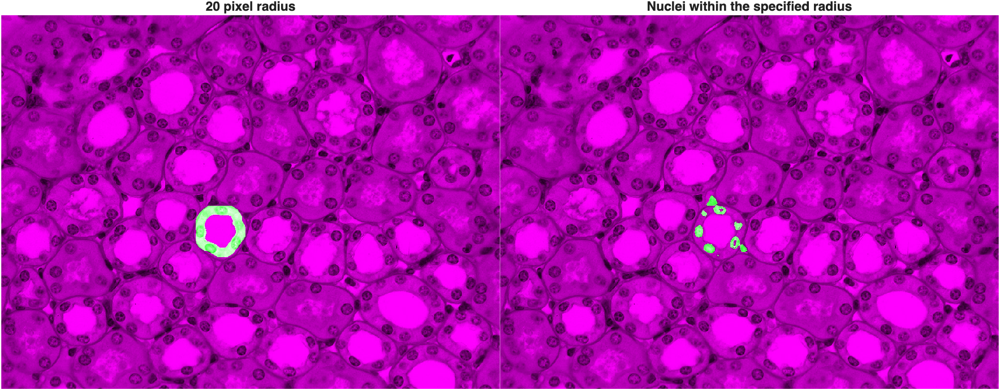
bwconncompis a quick way to count distinct objects in a mask—NumObjectsis the count, andPixelIdxListholds the linear indices of each one.
Looping this process over every duct (with a for loop, iterating over each duct's label) gives us a nuclei count per duct, and labels each set of surrounding nuclei to match its duct:
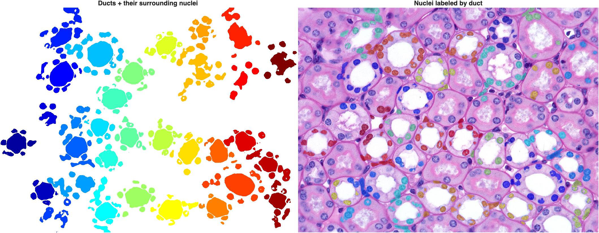
Nuclei counts per duct ranged from 2 to 10 in this image. A nucleus sitting between two ducts touches both rings and gets counted for both—but in the label map, it keeps only the label of whichever duct it was assigned to last in the loop.
Classifying the Ducts
Larger lumens generally have longer perimeters and may be near more nuclei. We therefore normalize each nearby-nucleus count by lumen perimeter. The result is nearby nuclei per 100 pixels of lumen perimeter, not a direct measurement of epithelial nuclear density:
| Normalize nuclei count by perimeter | |
|---|---|
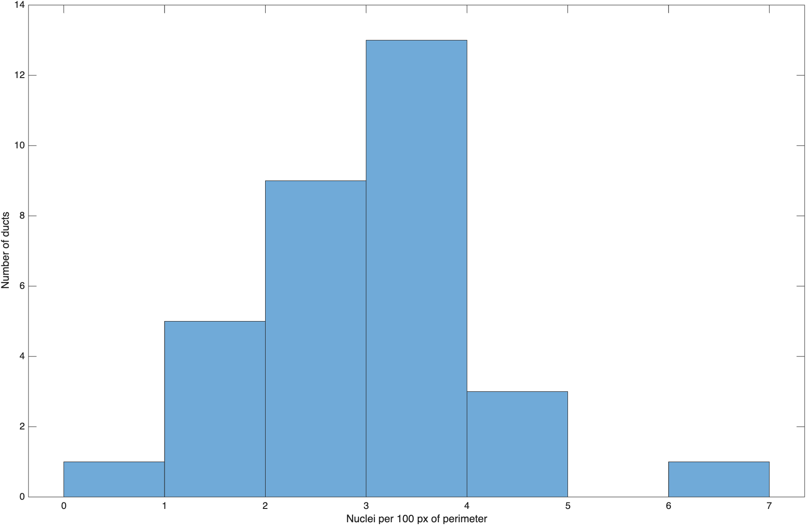
Unlike the earlier toy examples, real tissue doesn't always split as cleanly as we'd like—this distribution is right-skewed with a single high outlier, but no sharp gap separating two obvious groups. That's a realistic result, not a failure: some ducts are irregular or ambiguous (their mask doesn't follow the lumen edge precisely, which throws off both the perimeter and which nuclei the ring happens to touch), and a single global ring width can't be perfectly tuned for every duct's size and shape. Picking a cutoff here (for example, labeling anything above roughly 3.5 nuclei per 100 px as a likely collecting duct) is a judgment call, not something the data hands you automatically—exactly the kind of "the algorithm gives you a number, you still have to interpret it" lesson from Color Segmentation.
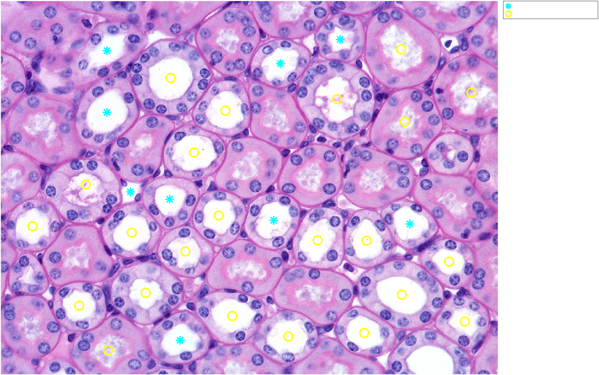
What Does a Nearby Nucleus Belong To?
Our algorithm answers: How many segmented nuclei touch a ring around each lumen? It does not prove that those nuclei belong to that tubule. A nucleus between two lumens may be counted twice, and the loop's nuc.label image retains only the last assignment. If the biological goal instead requires assigning each nucleus to one nearest lumen, we would need a different assignment rule and would have to decide how to handle ties and nuclei spanning multiple regions.
The choice of ring width, mask quality, image magnification, and lumen perimeter all affect the classification. Treat any proposed cutoff as an exploratory rule that requires biological validation.
Summary
bwdistgives every pixel its distance to the nearestTRUEpixel in a reference mask.- Thresholding
bwdist(BW)selects pixels within a chosen distance of a mask; combining lower and upper thresholds creates an outer ring. imregionalmaxfinds local peaks or plateaus in a distance map; these are not guaranteed to be exact halfway lines between objects.imreconstructkeeps whole objects that touch a marker, rather than just the pixels that happen to overlap it.- Normalizing a count by a size measurement (like perimeter) makes comparisons fair across objects of different sizes.
Challenge
How much does the ring width change the nuclei count?
We chose a boundary width of 20 pixels because it's close to the average nucleus diameter. Using duct 15 from this module, try boundary widths of 10 and 30 pixels instead of 20. How does the nuclei count change, and why?
| Compare nuclei counts at three ring widths | |
|---|---|
boundaryWidth=10 -> nuclei found: 6
boundaryWidth=20 -> nuclei found: 7
boundaryWidth=30 -> nuclei found: 12
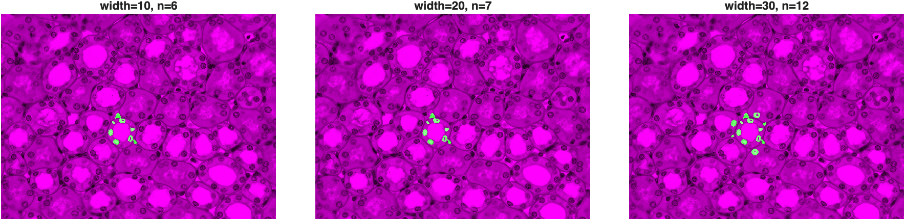
A narrower ring (10 px) barely grazes the inner nuclei and can miss some entirely. The 20 px ring—our original choice—cleanly captures the full ring of nuclei lining the duct. At 30 px, the ring has grown wide enough to start reaching into the next tier of nuclei, and even nuclei belonging to a neighboring duct, nearly doubling the count. There's nothing special about 20; it's a reasonable choice for this image's magnification and nucleus size, not a universal constant—exactly the kind of parameter the summary at the end of Color Segmentation warned about.